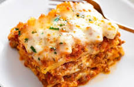

The world's Greatest Food: Lasagna

Why lasagna is by far the greatest of all
I’m sure everyone has their own favorite go-to lasagna recipe, but I’d just like to offer that this really is The Best Lasagna Ever. Growing up, my mom and her friends used to make it for potlucks and gatherings, and part of its appeal is that the ingredients used are totally basic; you don’t have to hunt down fresh basil or buffalo mozzarella or Parmigiano-Reggiano or handmade sausage from an Italian mama in old Napoli. Anyone can make this, anywhere, anytime. And it’s the easiest thing in the world.
ingredients
- Cheese
- Tomato Sauce
- Meats
- Garlic
- Dried basil
Steps
- Bring a large pot of water to a boil.
- Meanwhile, in a large skillet or saucepan, combine ground beef, sausage, and garlic. Cook over medium-high heat until browned. Drain half the fat; less if you’re feeling naughty. Add tomatoes, tomato paste, 2 tablespoons parsley, basil and 1 teaspoon salt. After adding the tomatoes, the sauce mixture should simmer for 45 minutes
- In a medium bowl, mix cottage cheese, beaten eggs, grated Parmesan, 2 more tablespoons parsley, and 1 more teaspoon salt. Stir together well. Set aside.
- To assemble: Arrange 4 cooked lasagna noodles in the bottom of a baking pan, overlapping if necessary. Spoon half the cottage cheese mixture over the noodles. Spread evenly.